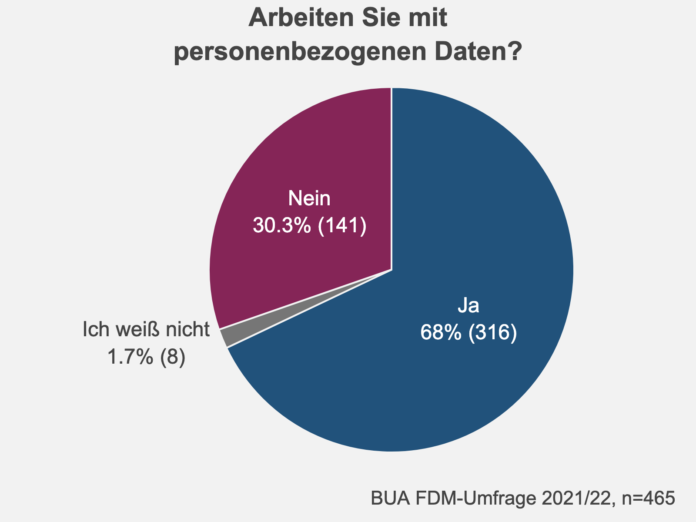

2 Arbeit mit personenbezogenen Daten
 An der Charité wird deutlich stärker als an anderen BUA-Einrichtungen mit personenbezogenen Daten gearbeitet.
Auf die Frage “Arbeiten Sie mit personenbezogenen Daten” antworteten 67,9% (316 von 465) der Befragten, dass sie mit personenbezogenen Daten arbeiten würden. 30,3% (141 von 465) der Befragten gaben hingegen an, nicht mit personenbezogenen Daten zu arbeiten.
2.1 Beruflicher Status
Wird die Frage nach der Arbeit mit personenbezogenen Daten nach dem beruflichen Status der Befragten gruppiert, wird deutlich, dass Professor*innen am häufigsten mit personenbezogenen Daten (82% oder 47 von 57) arbeiten. Wissenschaftliche Mitarbeiter*innen arbeiten durchschnittlich häufig (70% oder 187 von 268) mit personenbezogenen Daten. Doktorandinnen arbeiten etwas seltener (61% oder 57 von 93) mit personenbezogenen Daten.
Figure 2.1: Personenbezogene Daten und beruflicher Status
2.2 Teilen von Forschungsdaten
Die Häufigkeit, mit der Befragte mit personenbezogenen Daten arbeiten, spiegelt sich in spezifischen FDM-Praktiken wider. Forschende, die mit personenbezogenen Daten arbeiten, teilen deutlich seltener Forschungsdaten (17% oder 55 von 316) mit allen Forschenden und/oder der Öffentlichkeit als Forschende, die nicht mit personenbezogenen Daten arbeiten (29% oder 41 von 141).
Figure 2.2: Personenbezogene Daten und Teilen von Forschungsdaten
Projektteam Open Data und Forschungsdatenmanagement

This work is licensed under a Creative Commons Attribution 4.0 International License.